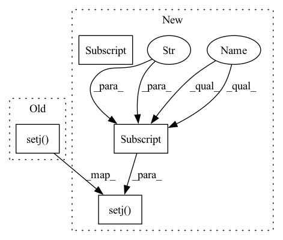

Pattern ID :10429

Before Change
env.ri.attachments = attachments
if j is not None:
env.ri.setj(j)
c = mercury.geometry.Coordinate(*env.ri.get_pose("tipLink"))
c.translate([0, 0, 0.2], wrt="world")
j = env.ri.solve_ik(c.pose, n_init=1)
obstacles = env.bg_objects + env.object_ids
After Change
before_return()
return result
env.ri.setj(result["j_grasp"])
ee_af_to_world = env.ri.get_pose("tipLink")
obj_to_world = pp.get_pose(env.fg_object_id)
obj_to_ee = pp.multiply(pp.invert(ee_af_to_world), obj_to_world)
In pattern: SUPERPATTERN
Frequency: 8
Non-data size: 4
Instances
Fragment ID: 36430955
Project Name: wkentaro/reorientbot
Commit Name: 11b473346a4a01cede8f0a946a6a0a1b4b0c87d1
Time: 2021-09-22
Author: www.kentaro.wada@gmail.com
File Name: examples/reorient/_reorient.py
M Class Name: AnonimousClass
N Class Name: AnonimousClass
M Method Name: plan_reorient(3)
N Method Name: plan_reorient(3)
M Parent Class:
N Parent Class:
M File Name: examples/reorient/_reorient.py
N File Name: examples/reorient/_reorient.py
M Start Line: 153
M End Line: 199
N Start Line: 145
N End Line: 209
'>
Before Change
env.ri.attachments = attachments
if j is not None:
env.ri.setj(j)
c = mercury.geometry.Coordinate(*env.ri.get_pose("tipLink"))
c.translate([0, 0, 0.2], wrt="world")
j = env.ri.solve_ik(c.pose, n_init=1)
obstacles = env.bg_objects + env.object_ids
After Change
pp.remove_body(obj_af)
// lock_renderer.restore()
result["j_init"] = env.ri.getj()
bg_object_ids = env.bg_objects + env.object_ids
bg_object_ids.remove(env.fg_object_id)
ee_af_to_world = np.hsplit(grasp_pose, [3])
obj_af_to_world = np.hsplit(reorient_pose, [3])
if env._robot_model == "franka_panda/panda_suction":
dgs = [0]
rotation_axis = "z"
else:
dgs = np.random.uniform(-np.pi, np.pi, size=(3,))
rotation_axis = True
for dg in dgs:
c = mercury.geometry.Coordinate(*ee_af_to_world)
c.rotate([0, 0, dg])
// solve j_grasp
j = env.ri.solve_ik(c.pose, rotation_axis=rotation_axis)
if j is not None:
if not env.ri.validatej(j, obstacles=bg_object_ids):
logger.warning("j_grasp is invalid")
j = None
else:
logger.warning("j_grasp is not found")
if j is not None:
result["j_grasp"] = j
break
else:
logger.error("j_grasp is not found")
before_return()
return result
env.ri.setj(result["j_grasp"])
ee_af_to_world = env.ri.get_pose("tipLink")
obj_to_world = pp.get_pose(env.fg_object_id)
obj_to_ee = pp.multiply(pp.invert(ee_af_to_world), obj_to_world)
'>
Fragment ID: 36430954
Project Name: wkentaro/reorientbot
Commit Name: 11b473346a4a01cede8f0a946a6a0a1b4b0c87d1
Time: 2021-09-22
Author: www.kentaro.wada@gmail.com
File Name: examples/reorient/_reorient.py
M Class Name: AnonimousClass
N Class Name: AnonimousClass
M Method Name: plan_reorient(3)
N Method Name: plan_reorient(3)
M Parent Class:
N Parent Class:
M File Name: examples/reorient/_reorient.py
N File Name: examples/reorient/_reorient.py
M Start Line: 153
M End Line: 199
N Start Line: 145
N End Line: 209
'>
Before Change
)
]
env.ri.setj(env.ri.homej)
// env.ri.attachments[0].assign()
with env.ri.enabling_attachments():
j = env.ri.solve_ik(
After Change
world_saver.restore()
env.ri.attachments = []
continue
result["js_pre_grasp"] = js
env.ri.setj(result["j_pre_grasp"])
obstacles = env.bg_objects + env.object_ids
obstacles.remove(env.fg_object_id)
'>
Fragment ID: 36430953
Project Name: wkentaro/reorientbot
Commit Name: b77e1c2ca1e78f7af06c3b2772f5047b482b6af6
Time: 2021-09-22
Author: www.kentaro.wada@gmail.com
File Name: examples/reorient/_reorient.py
M Class Name: AnonimousClass
N Class Name: AnonimousClass
M Method Name: plan_place(2)
N Method Name: plan_place(2)
M Parent Class:
N Parent Class:
M File Name: examples/reorient/_reorient.py
N File Name: examples/reorient/_reorient.py
M Start Line: 484
M End Line: 569
N Start Line: 510
N End Line: 568
'>
Before Change
]
j = self.ri.homej
self.ri.setj(j)
self.ri.attachments[0].assign()
with self.ri.enabling_attachments():
j = self.ri.solve_ik(
After Change
logger.error(f"Failed to solve placing IK: {act_result.action}")
before_return()
return False, result
result["j_place"] = j
obstacles = self.bg_objects + self.object_ids
obstacles.remove(self.fg_object_id)
if not self.ri.validatej(result["j_place"], obstacles=obstacles):
logger.error(f"j_place is invalid: {act_result.action}")
before_return()
return False, result
assert self.ri.attachments[0].child == self.fg_object_id
self.ri.setj(result["j_grasp"])
self.ri.attachments[0].assign()
js = self.ri.planj(
self.ri.homej,
'>
Fragment ID: 36430961
Project Name: wkentaro/safepicking
Commit Name: 6eb72947614ef04718cf8643e351975eb9d1851f
Time: 2021-07-02
Author: www.kentaro.wada@gmail.com
File Name: examples/reorient/_env.py
M Class Name: Env
N Class Name: Env
M Method Name: validate_action(2)
N Method Name: validate_action(2)
M Parent Class:
N Parent Class:
M File Name: examples/reorient/_env.py
N File Name: examples/reorient/_env.py
M Start Line: 375
M End Line: 376
N Start Line: 371
N End Line: 434
'>
Before Change
continue
result["js_place"] = js
env.ri.setj(j)
env.ri.attachments[0].assign()
before_return()
break
success = "js_place" in result
After Change
before_return()
continue
result["js_grasp"] = js
result["j_pre_grasp"] = js[0]
// solve js_pre_grasp
env.ri.setj(result["j_init"])
js = env.ri.planj(
result["j_pre_grasp"],
obstacles=[env.plane, env.bin] + env.object_ids,
)
'>
Fragment ID: 36430967
Project Name: wkentaro/reorientbot
Commit Name: 0a491494f52743e9d480d59e6c0bc0b34f25beb4
Time: 2021-05-10
Author: www.kentaro.wada@gmail.com
File Name: examples/grasp_with_intent/reorient.py
M Class Name: AnonimousClass
N Class Name: AnonimousClass
M Method Name: plan_reorient(3)
N Method Name: plan_reorient(2)
M Parent Class:
N Parent Class:
M File Name: examples/grasp_with_intent/reorient.py
N File Name: examples/grasp_with_intent/reorient.py
M Start Line: 159
M End Line: 253
N Start Line: 139
N End Line: 269